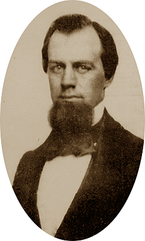

c1853

MAINE
1827 May 1 - Thaddeus was born in Gardiner, Maine. His parents were Michael Hildreth (born May 8, 1799 - died Oct. 29 1868) & Patience Hildreth (Knox) (born Jan. 12, 1797 - died May 1, 1873)
He had 3 older siblings; William, Nancy & Benjamin, and 6 younger siblings, George, Michael, Patience, Hannah, Frances & Osgood.
CALIFORNIA
1849 November 27 - The Hildreth party arrived in California aboard the steamship Oregon.
1850 March 27 - Thaddeus Hildreth, George A. Hildreth,* with John Walker, William "Billy" Jones (of New York) and Alexander Carson were the first miners to claim area that was first called Hildreth Diggins due to a rich strike of gold.
As a result of their discovery, 6000 miners were soon building a town.
The area was known first as the New Diggins, then due to the lack of water, Dry Diggings (Placers Seco). American Camp because of the amount of Americans at first. Then after some discussion, it was Columbia they all decided on.
MAINE MARRIAGE
1855 August 18 - Back in Maine, Thaddeus married Ann M. Seavey of Hallowell, Maine. (They had a son November 15,1865 and named him Willie Osgood.)
CIVIL WAR
He enlisted in the 3rd Maine September 2, 1861 as an asst. Surgeon and was almost immediately promoted to Surgeon. He was in charge of the third corps hospital at Gettysburg for the months of July & August 1863. He was discharged with this unit on June 28, 1864.
Maine's archives on Civil War Soldiers' Cards show that he was Assistant Surgeon and then Surgeon in the 3rd Maine Infantry. He was commissioned on Sept. 2, 1861 and was mustered in the same day for a 3 year enlistment. At the time, he was a resident of Gardiner, Maine. He was mustered out and honorably discharged on June 28, 1864 in Augusta, Maine.
MEDICAL PRACTICE
The Catalog of Bowdoin College, pg. 466, shows his as a non-graduate of the Medical School of Maine, Class of 1850. It says: Med. School 1849, 1855; M.D. Dartmouth 1856; born May 1, 1827 Gardiner, Maine; Residence, California 1849-1855. Surgeon 3rd Maine 1861-1864; Physician, Bath, Maine 1856-1858 and Gardiner, Maine 1858-1880. Died August 18, 1880.
He had a successful practice in Gardiner ME until the time of his death on August 18, 1880.
OBITUARY
The following is the clipping from The Kennebec Daily Journal of August 19, 1880.
"A sad accident took place here yesterday, resulting in the death of one of our most esteemed physicians, Dr Thaddeus Hildreth. The Dr. was not in good health, and yesterday morning took what he supposed to be a
dose of gentian, but which it appears was tincture of aconite root, a deadly poison. After taking the dose he got into his carriage and rode two or three miles, when feeling the effects of the poison he turned about and made for home, which he reached. He then had other physicians in the place immediately called in, but they could do nothing to relieve him and death soon ensued. He was about 55 years of age, and respected by everybody. His death is a great loss to the city."
His funeral was at 2:00 on August, 21st at the Episcopal church in Gardiner, and was attended by his comrades of the G.A.R. and the Masons. Six "brother" doctors were pall bearers. He is interred in Gardiner, ME. Next to his wife and son.
*George Hildreth remained permanently in California. He owned the Star Spangled Banner Saloon in Columbia 1853 and was elected Columbia City Marshal in 1859 and later was County Deputy Sheriff as well as a constable in 1863 for Township 1 (Sonora). He married Catherine E. Boyton and moved to San Francisco.
**Michael S. Hildreth left Columbia 1861 for Kansas after being injured in an Indian skirmish.
Resources for this page came from:
Scott Scroggins, of the 3rd Maine Regt. Vol. Inf. reenactment group.
Jeffrey Brown, Archivist III, of the Maine State Archives.
Tuolumne County Genealogical Society.
Miner's & Business Men's Directory, 1857.

This page is created for the benefit of the public by
Floyd D. P. Øydegaard.
Email contact:
fdpoyde3 (at) yahoo (dot) com
A WORK IN PROGRESS,
created for the visitors to the Columbia State Historic park.
© Columbia State Historic Park & Floyd D. P. Øydegaard.